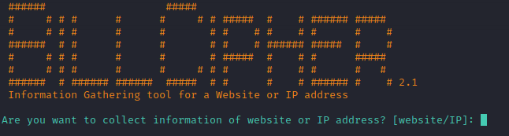

L'objectif de ce tutoriel est de vous présenter l'outil Billcipher. BillCipher est un outil libre et open-source disponible sur Github. Il est basé sur l'Intelligence Open Source (OSINT), et est un outil pratique et utile pour la reconnaissance.
Ce tutoriel met à disposition, par le biais de Docker et Docker-compose, une machine déjà configurée.
Récupérez le dockerfile dans le lien suivant :
docker-compose.yml
Dans un bash (Linux) ou cmd (Windows), allez dans le répertoire où vous avez téléchargé le fichier docker-compose.yml et effectuez les commandes suivantes :
Vous disposez maintenant d'une machine avec l'outil BillCipher.
Si vous voulez l'installer par vous-même, il est téléchargeable depuis github : BillCipher.
Connectez-vous à la machine :
Puis, lancez l'outil BillCipher :
Vous devriez ceci dans votre bash ou invite de commande.

Félicitations ! L'outil est parfaitement fonctionnel.
Maintenant, nous allons passer à l'étape de la manipulation.
Le tutoriel est terminé, et vous savez maintenant comment manipuler BillCipher.
Pour valider ce tutoriel, il vous suffira de rentrer la dernière page (lien) associée au site cible visualstudio.com .